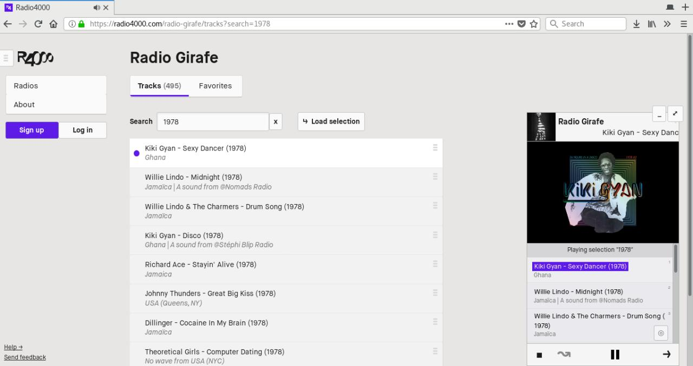

Search tracks, listen to results
Hello!
Today a new feature appears on the site, tracks search.
On top of now being able to search any radio tracks, and find the one you want to play, you can from today listen to a selection of tracks from a radio.

Fig 1. playing selection “#after” from Radio
Tobha
That’s right, you can try it now, go to any radio (of course, yours
too!), and explore the list of tracks. Just search for something, and if
there are any results press the “load selection” button to listen to
everything in the player.
About #hashtags
Hashtags are pretty neat, they can be used to create “playlists” from your tracks.
Let’s say, that if on every “jazz” track in you radio, you add to the description the term “#jazz”; you and every other user will then be able to search for all tracks that you decided to tag. Therefore, hashtags can be used as tags, if you feel like it.
Track description, and title
Every track you add to you radio can have a “title” and “description”. These two fields are used to lookup for your search. You can add every information you think is usefull to a description.

Fig 2. Radio Girafe use of track descriptions allows to play a selection of tracks from “1978”
The future
We this is a major feature and a pretty usefull one. It is also only the beginning as some new ideas will soon come to complement this feature.
If you start using #hashtags in your tracks, let’s say “#cumbia”, or “#party”, you can also “advertise” your tags in your radio channel description. That way, listeners looking for a radio with “cumbia” will be able to find you, and listen directly to your cumbia selection; a good match.
Last teaser, wouldn’t it be sweet if your tracks could easily have tags already? Let’s say, the country of origin, the track released year, the record label that published it… genre? styles? Many possibilities in this forseable future.
As usual, let us know if you’re having any feedback, issue or want to get in touch:
https://radio4000.com/feedback
Hope you’ll enjoy the digging.
Cheers!